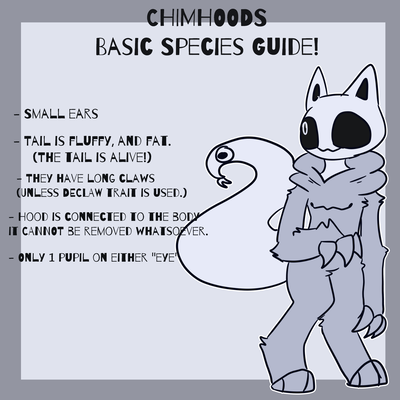
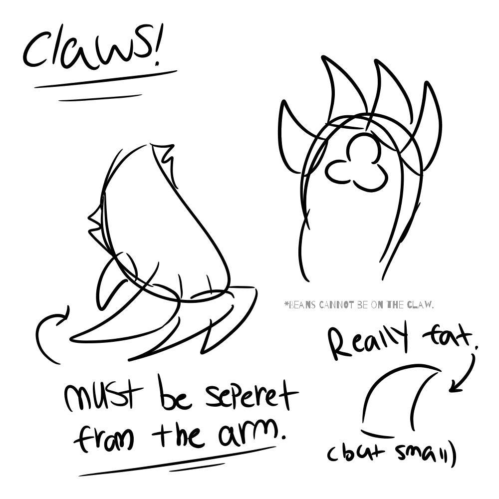
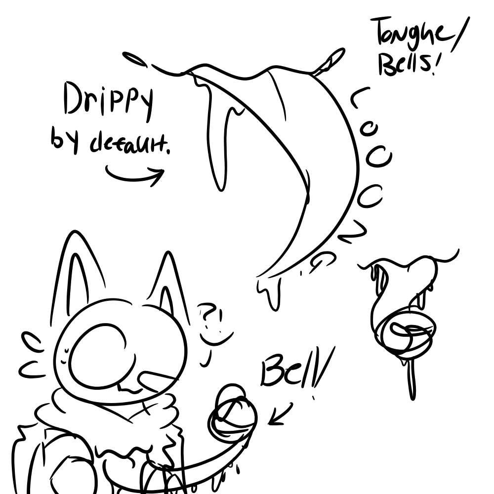

About Chimhoods
BASIC INFORMATION
Chimhoods are a bell kitties who can see and control dreams. They may not look intimidating due to size, but they do hold a lot of power.
They cannot speak through their mouths, their REAL mouths are on their chest, they speak with that instead!
SPECIES - BASIC GUIDE
this is used for basic MYO Entrees. You will need to use this so you don't mess the anatomy up! We're not so strict with this, so approval should be easy!
Head
Chimhoods head's are COMPLETELY made out of metal. (Unless a different texture Trait is added!) And are pretty strong and help during battles. And sometimes, when a Chim shakes their head, or moves their head to much, it makes a ' Ring Ring!! ' noise! Their head works like a real bell!
Head Types
Chimhoods can have any type of metal, this can vary by:
- Metal
- Gold
- Titaniam
- Any Other Metal
Any metal that exists in the real world can be used on your Chim! This doesn't effect the colors, however. Chimhoods can be any color!
Want to find other textures? Go to The Trait List to find more that interest you! Have fun!~
Hood/Body

Chimhood hoodies are very fluffy, their "hood" has ear sockets so they can fit their tiny little ears in the hood, to give maximum comfort. The hoodie of the Chim can NEVER come off. It's attached to their body and it's basically their skin/fur!! Please do not draw Chims without their hoodie/fur. But you can draw them with their hood off however! Like how it's shown in the Basic Guide sheet!
They also have cheek fluff on the side of their hood, this is RECOMMENDED But isn't REQUIRED.
Claws/Arms
Chims have pretty small, but fat claws. They use them for hunting prey, and to get a good grip onto things! Chims MUST have some sort of claw. (unless you use the Declaw Trait!) The claws basically help the Chimhood with basic needs. Chims with "declaw" may struggle a bit more, but the world offers help for Chims with declaw who may need it.
Chimhood claws must ALWAYS look different/seperate from the arm, itslef. unless you use the "merged claw" trait.
You can find more traits in the "claw" section of the Trait List for more options. :)
Tail
Chimhoods tails are actually ALIVE!! They're a "Worm on a String" inspired creature-like parasite that's connected to the Chim! It doesn't harm them in anyway, it actually helps them with daily needs, and sometimes Chims use their tails as a therapist/emotional support buddy. Since their tails and talk. ..(Sorta...) But nonetheless, the tail makes the Chim alive and happy. But in payment, the Chim shares almost half of it's energy with the parasite. This makes the chim more "easily" tired.
But the amount of ebergy shared is varied. It all depends on size, and how active the tail is. If the tail is smaller, the tail shares less energy, if it's bigger, it shares more energy. (when the Tail is awake, at least.) The tail will only dies when the Chim dies. Unless the chim is marked undead.
Mouth + Tongue
Chimhoods have a mouth on their chest that's basically their REAL mouth. They can speak through there, the "mouth" on their head is only ment to connect the eyes. The eye actually holds some type of "bell". They use this bell so they can communicate when they are non verbal in any way! Imagine it like- when you get non verbal because of stress. It works just like that.

Note: Tongues are drippy/slimey by default! This isn't optional.